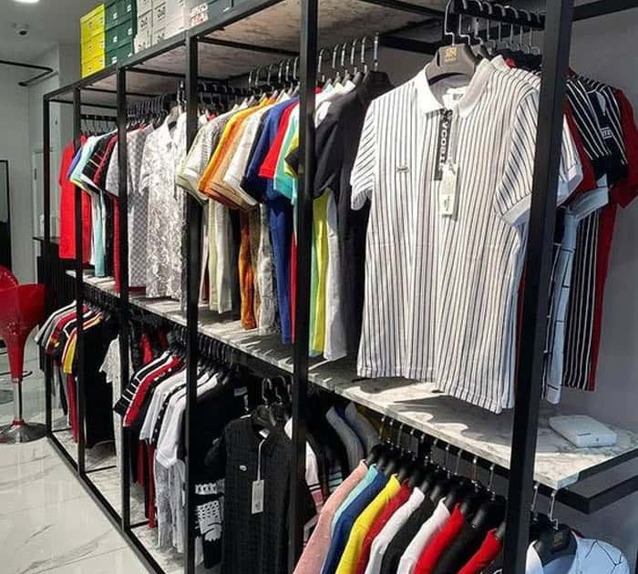
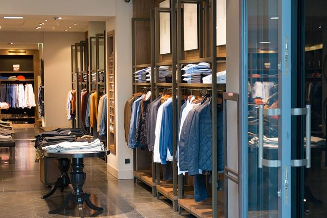
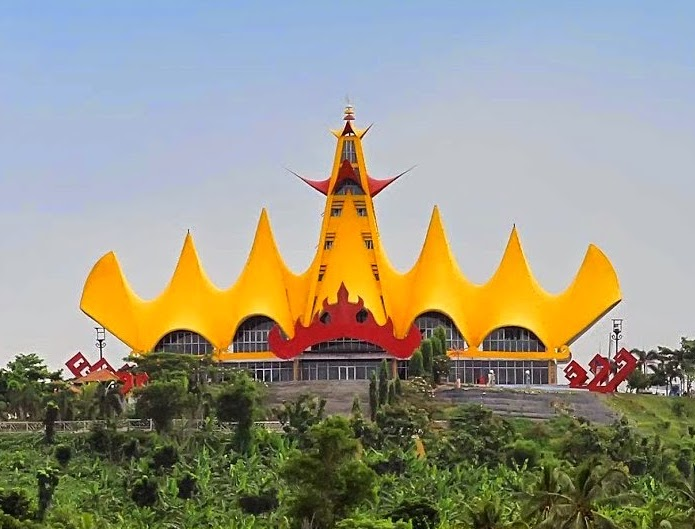

BajuKU adalah toko baju yang menyediakan pakaian - pakaian pria dari usia remaja hingga dewasa berdiri sejak tahun 2012 dengan cabang pertama berlokasi di Provinsi Lampung. Di toko ini menyediakan kaos, kemeja, kaos polo, celana jeans, dan celana bahan. Bukan hanya baju dan celana tetapi juga menyediakan sepatu dan topi serta segala aksesoris dengan kualitas terbaik.

Untuk saat ini BajuKU sudah memiliki beberapa cabang di Lampung dan di luar Lampung. Untuk cabang di pulau Jawa yakni di Jakarta, Bandung, dan Surabaya. Setiap bulan toko kami mampu menjual hingga 150 buah pakaian dan aksesoris dengan omzet sebesar 50 juta rupiah perbulan.
Our Headquarter
